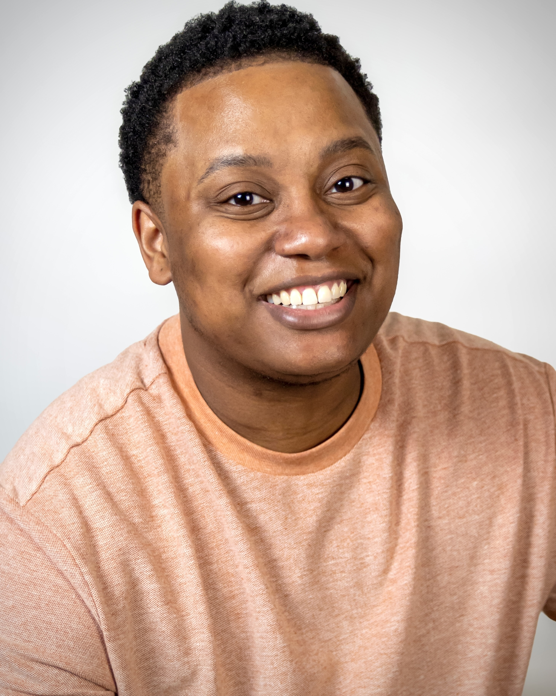

KEO FOSTER
yesitsskeo@gmail.com

Summary
With over a decade of professional experience, I specialize in crafting immersive visual narratives and
captivating content as a detail-oriented video editing specialist. Proficient in Adobe Premiere Pro, Final Cut
Pro, and DaVinci Resolve, I excel in video editing, storytelling, and narrative structure. Additionally, I have
foundational knowledge in motion graphics, sound engineering, and live event production, enabling me to
contribute effectively to projects and collaborate with clients and teams to bring creative visions to life.
Education
-
Associate of Arts, A.A, 2015
- Grand Rapids Community College
- Grand Rapids, MI
- General Education/MACRAO
-
Internship, 2014
- Nickelodeon Animation Studios (3 mos)
- Burbank, CA
-
Digital Animation & Game Design, 2014
- Ferris State University
- Grand Rapids, MI
- (Some Coursework)
-
Web Development, 2024
- Udemy
- 2024 Web Development Bootcamp
- (Currently In Progress)
Work Experience
Contracted Videographer/Editor
Arrabon, Richmond, VA
Sept. 2019 - Nov. 2022
- Led the production of Thoughtful Thursdays, a 54-episode, thought-provoking YouTube series addressing racial
equity and social justice issues, fostering engaging conversations and community dialogue.
- Conceptualized content, managed schedules, and procured and maintained equipment.
- Filmed, edited, and uploaded episodes to YouTube, integrating captivating motion graphics and titles.
- Orchestrated set design, executed multiple camera shots, managed lighting and sound, and facilitated
talent coordination.
- Contributed to an ongoing social justice documentary, traversing the United States to film diverse experts
on the subject.
- Organized and logged captured content, facilitated shot and mic setups, and ensured
seamless operations within a two-person production team.
- Conducted basic color and audio correction to ensure a cohesive and compelling
narrative.
Audio Visual Technician
East End Fellowship, Richmond, VA
Mar. 2021 - Mar. 2023
- Directed recruitment, management, and training initiatives for volunteer audiovisual teams, cultivating a
collaborative and proficient technical support environment to elevate worship experiences.
- Oversaw the implementation and maintenance of audiovisual systems, guaranteeing consistent performance
throughout services.
- Collaborated closely with team members to streamline livestream execution, offering proactive technical
assistance and troubleshooting solutions as required.
- Enhanced audio capture methods for livestreams, prioritizing clarity and consistency to amplify viewer
engagement.
- Executed meticulous setup and operation of audiovisual equipment during services, ensuring a polished and
professional presentation.
Freelance Projects
- Produced dynamic music videos and 2D hand-drawn animations, from conceptualization to final production,
garnering thousands of views on various platforms.
- Provided post-production services for livestreams and e-learning content, optimizing for diverse audiences
and platforms.
Skills
- Proficient in Adobe Premiere Pro, Final Cut Pro, DaVinci Resolve
- Skilled in video editing with a focus on storytelling and narrative structure
- Basic proficiency in motion graphics, including fundamental techniques for enhancing visual appeal
- Familiarity with sound engineering principles and basic audio editing techniques
- Basic understanding of live event production, including equipment setup and operational procedures
- Detail-oriented with strong problem-solving abilities
- Excellent communication and collaboration skills
- Adaptable to fast-paced environments and tight deadlines
Additional Information
- Open to freelance and full-time opportunities, dedicated to delivering exceptional results.
- Thrives in both independent and collaborative work environments.
- Willing to relocate for career advancement opportunities.